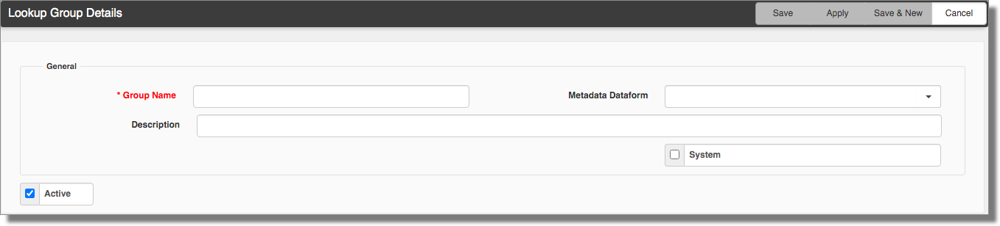
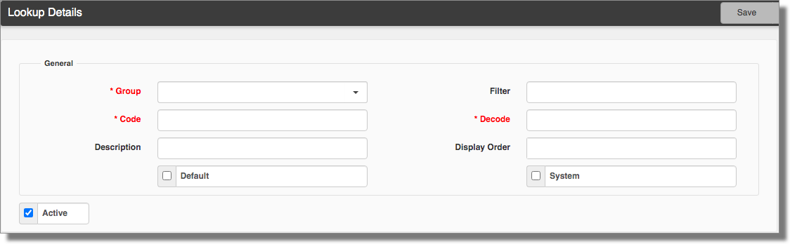

The Lookup Groups dashboard opens. From here, you can manage or add groups or edit the values of an existing group.
The Lookup Group Details form opens.
Lookups are one of the most flexible datatypes in ClientSpace and are easily configurable when you understand how they work. Lookups are predetermined, selectable lists of information to ensure data are recorded consistently, instead of a straight text field, which leaves room for errors in spelling and formatting. When you decide to use lookups, you need a Lookup Group (our example – in the subsequent topics – uses US States) and the associated Lookup values (in our example, the individual states are the values). The following procedures and subsequent topics show you how you can use lookups to get the most out of your ClientSpace system.
Exercise extreme caution when administering Lookup Groups and the corresponding Lookup values. The system uses values, such as CSC_Status, in triggering business logic. Changing or deleting these values can result in system issues, which may require programming to resolve. If you are unsure about changing or deleting a value, please log an Extranet case. It is far better to deactivate a value than delete it, but it is even better to err on the side of caution and ask first.
Lookups consist of a Lookup Group and Lookup values, which contain, at a minimum, a Code and Decode value. For new lookups, first, create the Lookup Group. Then you create the Lookup values.
To add or configure a Lookup Group:

|
Group Name |
Enter a unique group name to avoid confusion when using lookups. |
|
Metadata Dataform |
A lookup can reference associated metadata through another dataform. However, if not configured correctly, it can cause errors. Before you configure lookup metadata, please log an Extranet case. For more information about metadata, see |
|
Description |
Enter a unique description to avoid confusion. |
|
System |
Indicates this group is a building block of the system. When marked as System, it is locked down and not editable. |
|
Active |
Select this option to activate the new group. |
You are returned to the Lookup Groups dashboard.
Now let's add values to your group.
To add values to the new group:

|
Group |
Select the new group you just added. |
|
Filter |
Filter can further refine the lookups or use a lookup group more flexibly. This field works in conjunction with the Filter Value field on the dataform to associate a lookup with a dataform field.
Filter can be a word or single characters that represent what you are filtering. To specify multiple filter values, use a comma-separated list with no spaces – for example,
For details on how to configure filters, see |
|
Code |
The Code value is the actual data value stored in the database when a record is saved.
|
|
Decode |
The Decode value is what displays on the dataform. Code and Decode are often the same but are not required to be. |
|
Description |
If the Decode value does not provide a logical description of its purpose, then add a description. |
|
Display Order |
Display Order assigns how the values display in the list. |
|
Default |
You can set one value as the default when a dataform field is configured to this lookup. For example, on the Workers’ Comp Claim dataform, the Claim Type field (which is configured as a lookup field) can default to Medical Only (a lookup value). When you add a new dataform, the field defaults to this value instead of blank. You would set Default for commonly used values. |
|
System |
Indicates this value is a building block of the system. When marked as System, it is locked down and not editable. |
|
Import ID |
After the lookup is saved, the Import ID field displays. This field is in the Administrative fieldset. Import ID is used for translation during imports that are configured with the lookup datatype. By default, this field is blank and must be set for imports.
|
|
Active |
Select Active to activate the new value. |
What's next? Now you need to configure the dataform targeted to use the new lookups. Go to